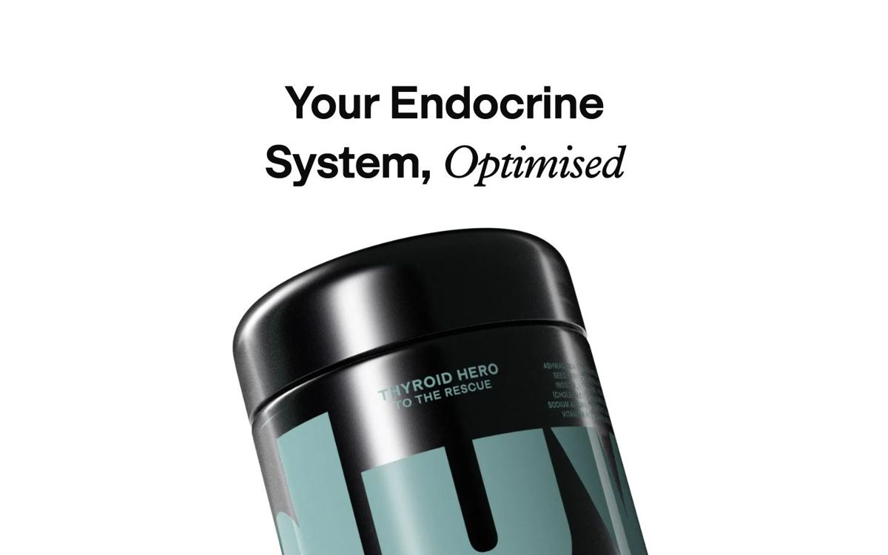

Duyu Care
duyucare.dops.agency · бренд для щитовидной железы
- Чем современно
- Белый экран, крупный заголовок, одна банка выезжает снизу на скролле. Ничего лишнего.
- Что берём
- Первый экран: короткая фраза плюс одна наша банка с коробкой. Ритм «один продукт — один экран».
- Осторожно
- В заголовке слово курсивом другим шрифтом — у нас по ТЗ один шрифт, это не берём.